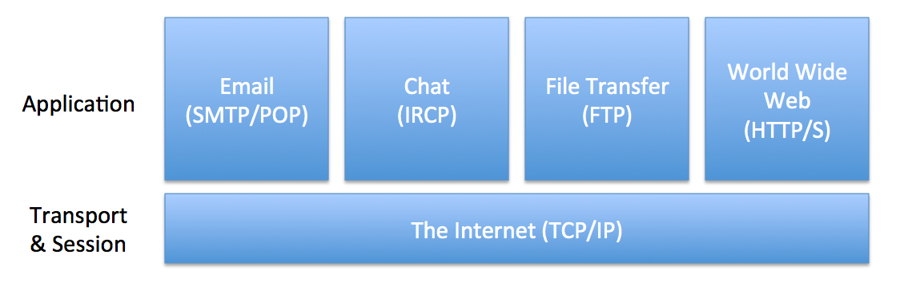
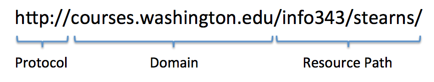
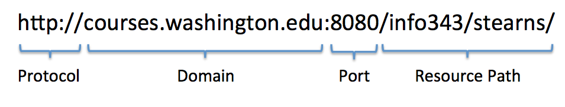
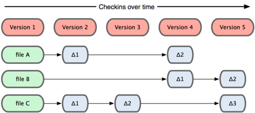

INFO 343
Web Technologies
Autumn 2013
Dr David Stearns
Today
- Introduce the Course
- How the Web Works (Part I)
- Your First Web Page
- Managing Your Files
But first, introduce yourselves!
Ask the person next to you...
- What's your name?
- What's your major and year in school?
- Where are you from (hometown)?
- What do you most want to learn in this class?
- What is your greatest fear about this class?
Course Introduction
Instead of reading the syllabus, I'll answer these questions:
- What's this course about?
- Why should I take it?
- What are you going to make me do?
- How hard do I need to work to get the grade I want?
- What do I need to get/have?
- What do I do when I have a question or problem?
- Who are you, and why are you torturing me?
What's this course about?
This course will teach you how to build the client-side parts of web sites and applications. You'll learn all the technical bits you need to know, but you'll also learn how to design pages that are intuitive, effective, and engaging.
Language and Tools


- HTML 5
- CSS 3
- JavaScript and jQuery
- Handy Web Development Tools
- Popular CSS/JS Frameworks
- Content Management Systems
- Version Control Systems
- Automated Testing
Techniques
- Responsive Web Design
- Progressive Enhancement and Graceful Degredation
- AJAX and Mashups
- Reusable JavaScript libraries
- Project Organization and Management
- Data Visualization
- Transaction Processing
Overriding Concerns
- User Experience
- Accessibility
- Security
- Performance
- Maintainability
Why Should I Take This Course?
If you're an Informatics major, you have to!
But even if you didn't have to take it, you really should.
Web technologies will increasingly be an integral part of nearly every job, as well as everyday life.
There are currently more web development jobs than talented web developers.
Learning web development will make you sexually irresistible to prospective mates...
OK, maybe not so much, but it will make you confident, which always helps.
What are you going to make me do?
| Assignment Type | Weight |
|---|---|
| Four Individual Homework Projects | 40% |
| Final Group Project | 30% |
| Weekly Labs (Fridays) | 20% |
| In-Class Challenges | 10% |
How hard do I need to work?
Very hard! (Duh!)
You will be graded on the quality of your finished work, not on how hard your tried, nor how much you improved.
I will expect a lot from you; by the end you should be ready to do professional web development work.
What do I need to get/have?
There are no required books!
But, there will be online articles to read for each class
(see Course Schedule in Canvas).
Recommended Books

What do I do when I have a question?
- Post to discussion boards in Canvas
- Contact your TA
- Contact Dr Stearns
- dlsinfo@uw.edu
- Office Hours: TTh 1:30-3:00, MGH 330N
Who are you?
I'm not Batman
Who are you?
- Software developer since 1991
- Started developing for the web in 1995
- PhD in History/Sociology of Technology
(University of Edinburgh, 2008)
Questions About the Course?

How the Web Works (Part I)
Ask the person next to you...
What's the difference between "the Internet" and "the World Wide Web?"
The Web is only one of many applications that utilize the Internet.

OK, great, but what's with all those acronyms that end in "P" like "TCP/IP?"
TCP/IP
- TCP/IP (Transmission Control Protocol/Internet Protocol) enables computers to exchange messages across the network.
- Each message needs:
- IP Address = a unique number assigned to each computer by the network
- Port Number = a number on which the target service is listening
For example, the IP address of the UW web server is 128.95.155.134, and it's listening for web requests on port 80.
Try entering this at the command line:
telnet 128.95.155.134 80And after you connect, enter this and hit return twice:
GET / HTTP/1.1
Host: www.washington.eduOK, great, but I type www.washington.edu into my browser, not 128.95.155.134. How does one get translated into the other?
IP Addresses
- Machine-oriented, not human-oriented (what was that UW IP address?)
- Tied to geography, so moving to a server in another location necessitates a different IP
The Solution: DNS
- The Domain Name System (DNS) acts like a telephone book, translating human-oriented "domain names" into machine-oriented IP addresses.
- Domains are hierarchical from right to left
www.washington.edu- edu = top-level domain for educational institutions
- washington = sub-domain of edu, registered to UW
- www = sub-domain of washington.edu, defined by UW
DNS
- New domains (e.g.,
iloveinfo343.com) can be purchased from an "accredited registrar" (e.g., Name Cheap, Go Daddy). - Purchaser then updates the DNS records with the IP address of target server.
- After changes replicate, browsers can now find the server.
HTTP
The Internet allows computer to talk, but it doesn't specify what they talk about.
HTTP (Hypertext Transfer Protocol) defines a language for sending and receiving "resources" managed by a web server.
Resources are identified using Uniform Resource Locators (URLs).
URLs

By convention, web servers listen for HTTP messages on port 80, but if the server has been configured differently, you can specify the port number in the URL as well.

Are you Tracking?
So what does your browser do when you enter http://www.google.com/ in the address bar?
What steps does it go through?
Let's Take a Break!

Your First Web Page
Web pages are written in the HyperText Markup Language (HTML)
<!doctype html>
<html lang="en">
<head>
<title>My First Page</title>
</head>
<body>
<p>Hello World!</p>
</body>
</html>Doctype Directive
Tells your browser what kind of document this is.
<!doctype html>This is the doctype for HTML5 documents.
Elements
Encodes meaning into otherwise plain text.
Marked by start-tag and end-tag
Content can be text and/or other elements.
<name>...content...</name>Elements
Some elements do not require an end tag because they can't have any content
<br> <!-- manual line break -->Attributes
Extends the element with additional information or options.
<name attribute="value" attribute="value">
...content...
</name>Attributes
Some attributes are merely markers, and don't need a value
<button id="mybutton" disabled>
...content...
</button>Comments
Downloaded to client, but not displayed.
<!-- this is a comment -->Basic Document Structure
<!doctype html>
<html lang="en">
<head>
... non-visible info about the page ...
... links to supporting files ...
</head>
<body>
... visible content ...
</body>
</html>The Head Section
Lots of elements can go in here, but this is a very basic set.
<head>
<meta charset="utf-8">
<meta name="description" content="...short page description...">
<meta name="author" content="...your name...">
<title>My Page Title</title>
</head>The Body Section
Lots and lots of elements can go in here.
<h1>Top-Level Heading</h1>
<p>This is a paragraph</p>
<h2>Second-Level Heading</h2>
<p>A link to <a href="google.com">Google</a></p>
<!-- an image -->
<p><img src="mycat.jpg" alt="cute cat"></p>
<!-- an unordered list -->
<p>Grocery List:</p>
<ul>
<li>Pizza</li>
<li>Chips</li>
<li>Beer</li>
</ul>Try it Yourself!
Download the template.html file, add some content, and view it in a browser.
Managing Your Files
Web projects generate a lot of files, so you need tools and techniques for managing them.
- A good text editor
- A version control system (VCS)
- A clear directory structure
A Good Text Editor
A text editor optimized for web development will make your life much easier.
A Version Control System (VCS)
Critical for team projects, but also useful for individual work.
VCS Concepts
- Repository = database of files and changes to those files
- Working Copy = private working version of repository files on your computer
- Commit = a set of changes applied to repository files that you think are ready for others to use
- Branch = a separate set of committed versions in the repository, useful for separating in-process feature work from release/master versions
A VCS captures each change to a file and can recreate any version of any file in any branch.

Git makes a complete snapshot of each changed file; it consumes more disk space, but it's also much faster to switch between different branches or rollback to a previous version.

Git also has a "staging" area, which is helpful when doing partial commits

Git is also decentralized, but can be used with a central cloud repository (like GitHub)

Simple Single-Developer Workflow
- Create a new repository on GitHub
- Clone the repository to your local computer
- Add files, commit them to the repository, and push them to GitHub
- Edit files, commit changes, push to GitHub
- Lather, rinse, repeat...
Typical Team Workflow
- Create a new repository on GitHub
- Everyone clones the repository to their local computers
- Team Lead creates a branch for product version
- Developers create branches for each feature
- Add/edit fiiles, commit to feature branch, sync with GitHub
- When feature is done, merge feature branch into version branch
- When version is done, merge version branch into master with version tag
- "Hot-fixes" made in hot-fix branch, merged into master when tested

A Clear Directory Structure
- project/
- index.html (home page)
- ...other html files...
- img/ (images)
- css/ (stylesheets)
- js/ (scripts)
- inc/ (included snippets)
- lib/ (external libraries)
For Friday's Lab...
- Create a GitHub Account
- Create an iSchool Student Web Hosting Account
- Consider downloading Sublime Text and watching the tutorial videos.
- Read About Version Control, Git Basics, and A Successful Git Branching Model.